Submission to the Senate Environment and Communications References Committee
Read the complete supplied reference online, or download the original file.
Original source material, including its historical dates and proposals.
Page 1 of 23
{kind=link}
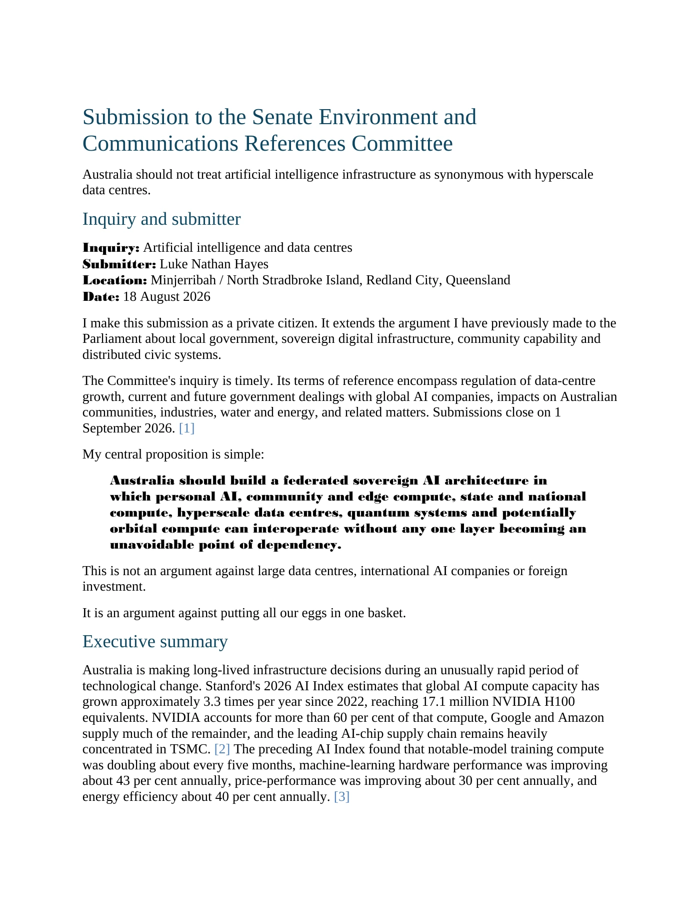
Read selectable text for page 1
Text extracted from this page. Use the page image for its original layout, tables and figures.
Communications References Committee
Australia should not treat artificial intelligence infrastructure as synonymous with hyperscale
data centres.
Inquiry and submitter
Inquiry: Artificial intelligence and data centres
Submitter: Luke Nathan Hayes
Location: Minjerribah / North Stradbroke Island, Redland City, Queensland
Date: 18 August 2026
I make this submission as a private citizen. It extends the argument I have previously made to the
Parliament about local government, sovereign digital infrastructure, community capability and
distributed civic systems.
The Committee's inquiry is timely. Its terms of reference encompass regulation of data-centre
growth, current and future government dealings with global AI companies, impacts on Australian
communities, industries, water and energy, and related matters. Submissions close on 1
September 2026. [1]
My central proposition is simple:
Australia should build a federated sovereign AI architecture in
which personal AI, community and edge compute, state and national
compute, hyperscale data centres, quantum systems and potentially
orbital compute can interoperate without any one layer becoming an
unavoidable point of dependency.
This is not an argument against large data centres, international AI companies or foreign
investment.
It is an argument against putting all our eggs in one basket.
Executive summary
Australia is making long-lived infrastructure decisions during an unusually rapid period of
technological change. Stanford's 2026 AI Index estimates that global AI compute capacity has
grown approximately 3.3 times per year since 2022, reaching 17.1 million NVIDIA H100
equivalents. NVIDIA accounts for more than 60 per cent of that compute, Google and Amazon
supply much of the remainder, and the leading AI-chip supply chain remains heavily
concentrated in TSMC. [2] The preceding AI Index found that notable-model training compute
was doubling about every five months, machine-learning hardware performance was improving
about 43 per cent annually, price-performance was improving about 30 per cent annually, and
energy efficiency about 40 per cent annually. [3]
Page 2 of 23
{kind=link}
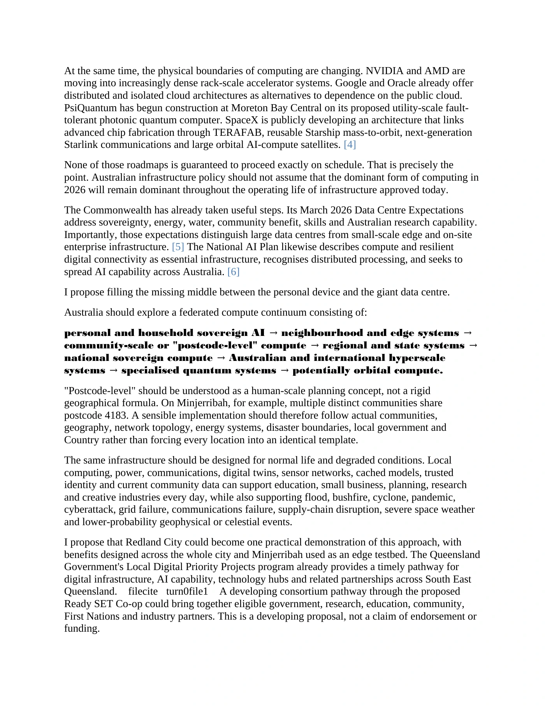
Read selectable text for page 2
Text extracted from this page. Use the page image for its original layout, tables and figures.
moving into increasingly dense rack-scale accelerator systems. Google and Oracle already offer
distributed and isolated cloud architectures as alternatives to dependence on the public cloud.
PsiQuantum has begun construction at Moreton Bay Central on its proposed utility-scale fault-
tolerant photonic quantum computer. SpaceX is publicly developing an architecture that links
advanced chip fabrication through TERAFAB, reusable Starship mass-to-orbit, next-generation
Starlink communications and large orbital AI-compute satellites. [4]
None of those roadmaps is guaranteed to proceed exactly on schedule. That is precisely the
point. Australian infrastructure policy should not assume that the dominant form of computing in
2026 will remain dominant throughout the operating life of infrastructure approved today.
The Commonwealth has already taken useful steps. Its March 2026 Data Centre Expectations
address sovereignty, energy, water, community benefit, skills and Australian research capability.
Importantly, those expectations distinguish large data centres from small-scale edge and on-site
enterprise infrastructure. [5] The National AI Plan likewise describes compute and resilient
digital connectivity as essential infrastructure, recognises distributed processing, and seeks to
spread AI capability across Australia. [6]
I propose filling the missing middle between the personal device and the giant data centre.
Australia should explore a federated compute continuum consisting of:
personal and household sovereign AI neighbourhood and edge systems → →
community-scale or "postcode-level" compute regional and state systems → →
national sovereign compute Australian and international hyperscale →
systems specialised quantum systems potentially orbital compute.→ →
"Postcode-level" should be understood as a human-scale planning concept, not a rigid
geographical formula. On Minjerribah, for example, multiple distinct communities share
postcode 4183. A sensible implementation should therefore follow actual communities,
geography, network topology, energy systems, disaster boundaries, local government and
Country rather than forcing every location into an identical template.
The same infrastructure should be designed for normal life and degraded conditions. Local
computing, power, communications, digital twins, sensor networks, cached models, trusted
identity and current community data can support education, small business, planning, research
and creative industries every day, while also supporting flood, bushfire, cyclone, pandemic,
cyberattack, grid failure, communications failure, supply-chain disruption, severe space weather
and lower-probability geophysical or celestial events.
I propose that Redland City could become one practical demonstration of this approach, with
benefits designed across the whole city and Minjerribah used as an edge testbed. The Queensland
Government's Local Digital Priority Projects program already provides a timely pathway for
digital infrastructure, AI capability, technology hubs and related partnerships across South East
Queensland. fileciteturn0file1 A developing consortium pathway through the proposed
Ready SET Co-op could bring together eligible government, research, education, community,
First Nations and industry partners. This is a developing proposal, not a claim of endorsement or
funding.
Page 3 of 23
{kind=link}
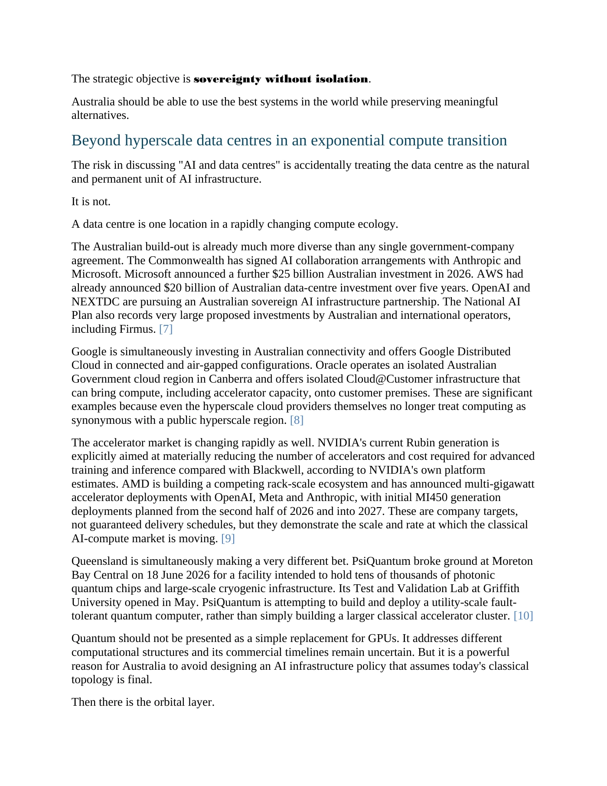
Read selectable text for page 3
Text extracted from this page. Use the page image for its original layout, tables and figures.
Australia should be able to use the best systems in the world while preserving meaningful
alternatives.
Beyond hyperscale data centres in an exponential compute transition
The risk in discussing "AI and data centres" is accidentally treating the data centre as the natural
and permanent unit of AI infrastructure.
It is not.
A data centre is one location in a rapidly changing compute ecology.
The Australian build-out is already much more diverse than any single government-company
agreement. The Commonwealth has signed AI collaboration arrangements with Anthropic and
Microsoft. Microsoft announced a further $25 billion Australian investment in 2026. AWS had
already announced $20 billion of Australian data-centre investment over five years. OpenAI and
NEXTDC are pursuing an Australian sovereign AI infrastructure partnership. The National AI
Plan also records very large proposed investments by Australian and international operators,
including Firmus. [7]
Google is simultaneously investing in Australian connectivity and offers Google Distributed
Cloud in connected and air-gapped configurations. Oracle operates an isolated Australian
Government cloud region in Canberra and offers isolated Cloud@Customer infrastructure that
can bring compute, including accelerator capacity, onto customer premises. These are significant
examples because even the hyperscale cloud providers themselves no longer treat computing as
synonymous with a public hyperscale region. [8]
The accelerator market is changing rapidly as well. NVIDIA's current Rubin generation is
explicitly aimed at materially reducing the number of accelerators and cost required for advanced
training and inference compared with Blackwell, according to NVIDIA's own platform
estimates. AMD is building a competing rack-scale ecosystem and has announced multi-gigawatt
accelerator deployments with OpenAI, Meta and Anthropic, with initial MI450 generation
deployments planned from the second half of 2026 and into 2027. These are company targets,
not guaranteed delivery schedules, but they demonstrate the scale and rate at which the classical
AI-compute market is moving. [9]
Queensland is simultaneously making a very different bet. PsiQuantum broke ground at Moreton
Bay Central on 18 June 2026 for a facility intended to hold tens of thousands of photonic
quantum chips and large-scale cryogenic infrastructure. Its Test and Validation Lab at Griffith
University opened in May. PsiQuantum is attempting to build and deploy a utility-scale fault-
tolerant quantum computer, rather than simply building a larger classical accelerator cluster. [10]
Quantum should not be presented as a simple replacement for GPUs. It addresses different
computational structures and its commercial timelines remain uncertain. But it is a powerful
reason for Australia to avoid designing an AI infrastructure policy that assumes today's classical
topology is final.
Then there is the orbital layer.
Page 4 of 23
{kind=link}
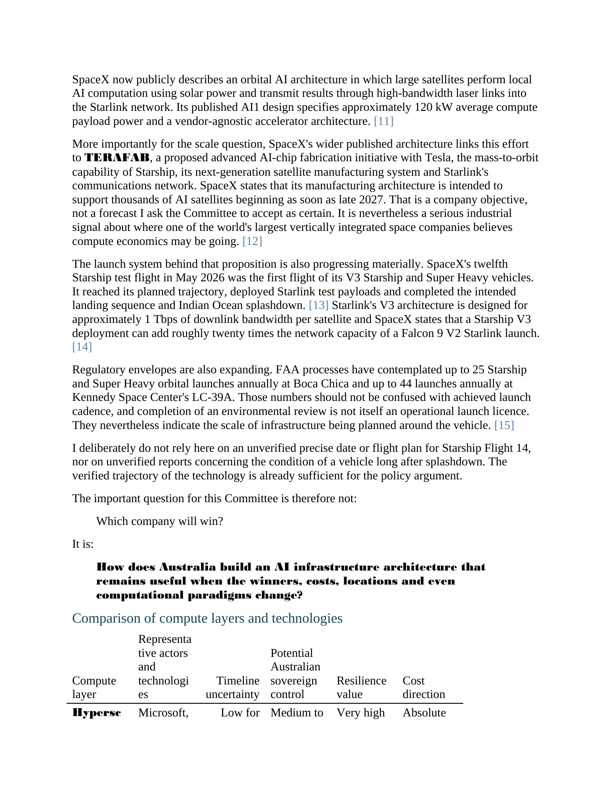
Read selectable text for page 4
Text extracted from this page. Use the page image for its original layout, tables and figures.
AI computation using solar power and transmit results through high-bandwidth laser links into
the Starlink network. Its published AI1 design specifies approximately 120 kW average compute
payload power and a vendor-agnostic accelerator architecture. [11]
More importantly for the scale question, SpaceX's wider published architecture links this effort
to TERAFAB, a proposed advanced AI-chip fabrication initiative with Tesla, the mass-to-orbit
capability of Starship, its next-generation satellite manufacturing system and Starlink's
communications network. SpaceX states that its manufacturing architecture is intended to
support thousands of AI satellites beginning as soon as late 2027. That is a company objective,
not a forecast I ask the Committee to accept as certain. It is nevertheless a serious industrial
signal about where one of the world's largest vertically integrated space companies believes
compute economics may be going. [12]
The launch system behind that proposition is also progressing materially. SpaceX's twelfth
Starship test flight in May 2026 was the first flight of its V3 Starship and Super Heavy vehicles.
It reached its planned trajectory, deployed Starlink test payloads and completed the intended
landing sequence and Indian Ocean splashdown. [13] Starlink's V3 architecture is designed for
approximately 1 Tbps of downlink bandwidth per satellite and SpaceX states that a Starship V3
deployment can add roughly twenty times the network capacity of a Falcon 9 V2 Starlink launch.
[14]
Regulatory envelopes are also expanding. FAA processes have contemplated up to 25 Starship
and Super Heavy orbital launches annually at Boca Chica and up to 44 launches annually at
Kennedy Space Center's LC-39A. Those numbers should not be confused with achieved launch
cadence, and completion of an environmental review is not itself an operational launch licence.
They nevertheless indicate the scale of infrastructure being planned around the vehicle. [15]
I deliberately do not rely here on an unverified precise date or flight plan for Starship Flight 14,
nor on unverified reports concerning the condition of a vehicle long after splashdown. The
verified trajectory of the technology is already sufficient for the policy argument.
The important question for this Committee is therefore not:
Which company will win?
It is:
How does Australia build an AI infrastructure architecture that
remains useful when the winners, costs, locations and even
computational paradigms change?
Comparison of compute layers and technologies
Compute
layer
Representa
tive actors
and
technologi
es
Timeline
uncertainty
Potential
Australian
sovereign
control
Resilience
value
Cost
direction
Hypersc Microsoft, Low for Medium to Very high Absolute
Page 5 of 23
{kind=link}
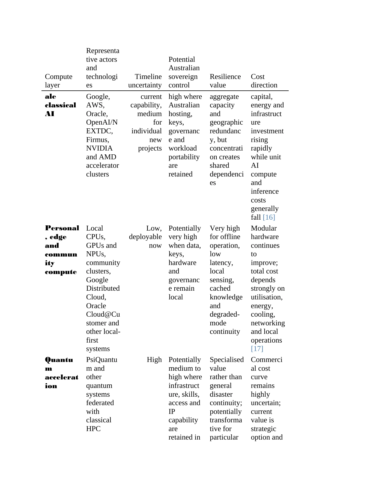
Read selectable text for page 5
Text extracted from this page. Use the page image for its original layout, tables and figures.
layer
Representa
tive actors
and
technologi
es
Timeline
uncertainty
Potential
Australian
sovereign
control
Resilience
value
Cost
direction
ale
classical
AI
Google,
AWS,
Oracle,
OpenAI/N
EXTDC,
Firmus,
NVIDIA
and AMD
accelerator
clusters
current
capability,
medium
for
individual
new
projects
high where
Australian
hosting,
keys,
governanc
e and
workload
portability
are
retained
aggregate
capacity
and
geographic
redundanc
y, but
concentrati
on creates
shared
dependenci
es
capital,
energy and
infrastruct
ure
investment
rising
rapidly
while unit
AI
compute
and
inference
costs
generally
fall [16]
Personal
, edge
and
commun
ity
compute
Local
CPUs,
GPUs and
NPUs,
community
clusters,
Distributed
Cloud,
Oracle
Cloud@Cu
stomer and
other local-
first
systems
Low,
deployable
now
Potentially
very high
when data,
keys,
hardware
and
governanc
e remain
local
Very high
for offline
operation,
low
latency,
local
sensing,
cached
knowledge
and
degraded-
mode
continuity
Modular
hardware
continues
to
improve;
total cost
depends
strongly on
utilisation,
energy,
cooling,
networking
and local
operations
[17]
Quantu
m
accelerat
ion
PsiQuantu
m and
other
quantum
systems
federated
with
classical
HPC
High Potentially
medium to
high where
infrastruct
ure, skills,
access and
IP
capability
are
retained in
Specialised
value
rather than
general
disaster
continuity;
potentially
transforma
tive for
particular
Commerci
al cost
curve
remains
highly
uncertain;
current
value is
strategic
option and
Page 6 of 23
{kind=link}
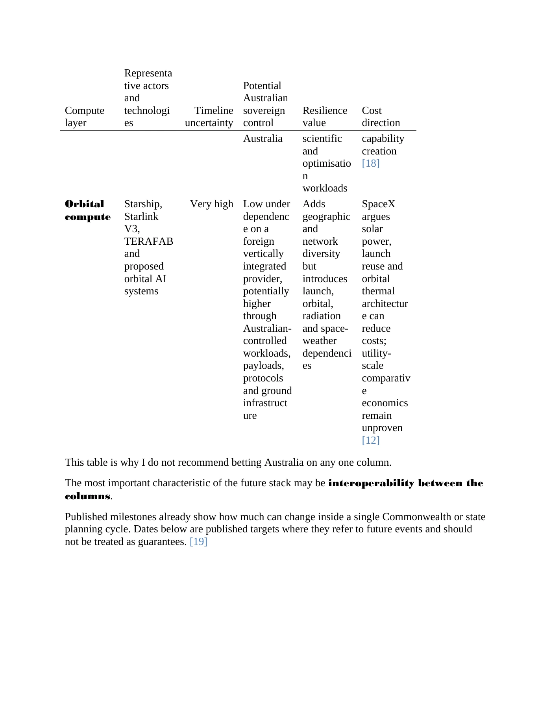
Read selectable text for page 6
Text extracted from this page. Use the page image for its original layout, tables and figures.
layer
Representa
tive actors
and
technologi
es
Timeline
uncertainty
Potential
Australian
sovereign
control
Resilience
value
Cost
direction
Australia scientific
and
optimisatio
n
workloads
capability
creation
[18]
Orbital
compute
Starship,
Starlink
V3,
TERAFAB
and
proposed
orbital AI
systems
Very high Low under
dependenc
e on a
foreign
vertically
integrated
provider,
potentially
higher
through
Australian-
controlled
workloads,
payloads,
protocols
and ground
infrastruct
ure
Adds
geographic
and
network
diversity
but
introduces
launch,
orbital,
radiation
and space-
weather
dependenci
es
SpaceX
argues
solar
power,
launch
reuse and
orbital
thermal
architectur
e can
reduce
costs;
utility-
scale
comparativ
e
economics
remain
unproven
[12]
This table is why I do not recommend betting Australia on any one column.
The most important characteristic of the future stack may be interoperability between the
columns.
Published milestones already show how much can change inside a single Commonwealth or state
planning cycle. Dates below are published targets where they refer to future events and should
not be treated as guarantees. [19]
Page 7 of 23
{kind=link}
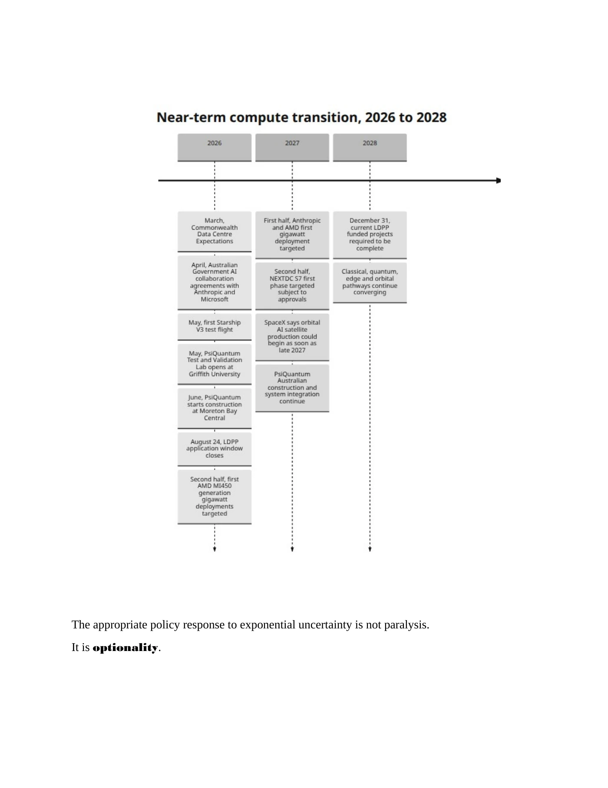
Read selectable text for page 7
Text extracted from this page. Use the page image for its original layout, tables and figures.
It is optionality.
Page 8 of 23
{kind=link}
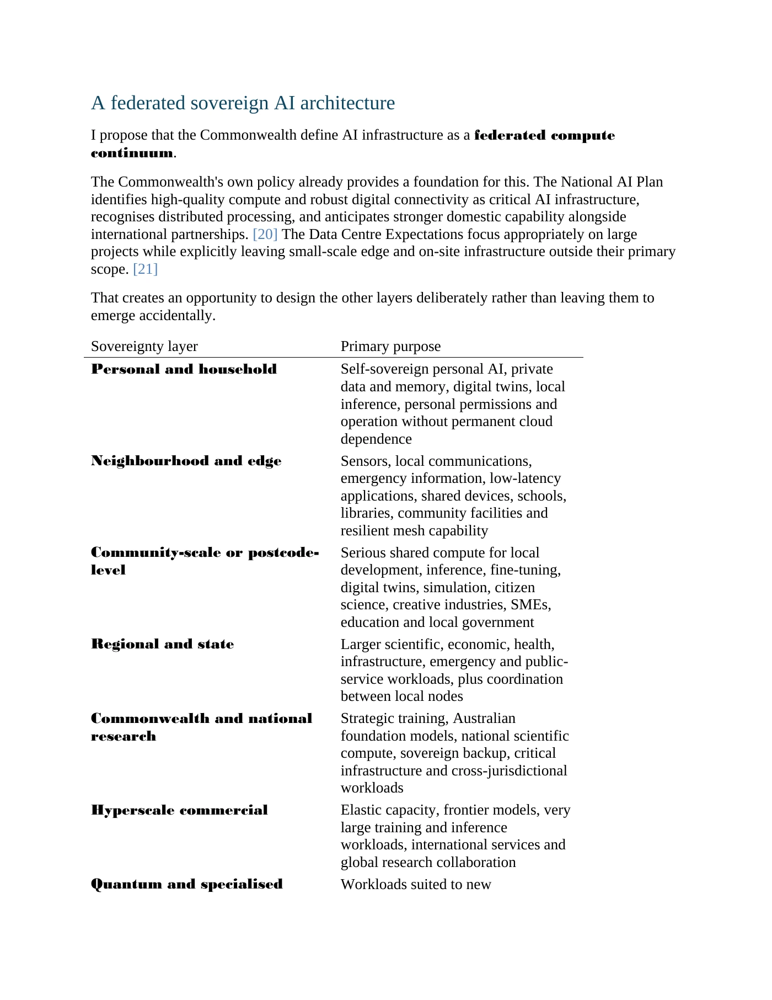
Read selectable text for page 8
Text extracted from this page. Use the page image for its original layout, tables and figures.
I propose that the Commonwealth define AI infrastructure as a federated compute
continuum.
The Commonwealth's own policy already provides a foundation for this. The National AI Plan
identifies high-quality compute and robust digital connectivity as critical AI infrastructure,
recognises distributed processing, and anticipates stronger domestic capability alongside
international partnerships. [20] The Data Centre Expectations focus appropriately on large
projects while explicitly leaving small-scale edge and on-site infrastructure outside their primary
scope. [21]
That creates an opportunity to design the other layers deliberately rather than leaving them to
emerge accidentally.
Sovereignty layer Primary purpose
Personal and household Self-sovereign personal AI, private
data and memory, digital twins, local
inference, personal permissions and
operation without permanent cloud
dependence
Neighbourhood and edge Sensors, local communications,
emergency information, low-latency
applications, shared devices, schools,
libraries, community facilities and
resilient mesh capability
Community-scale or postcode-
level
Serious shared compute for local
development, inference, fine-tuning,
digital twins, simulation, citizen
science, creative industries, SMEs,
education and local government
Regional and state Larger scientific, economic, health,
infrastructure, emergency and public-
service workloads, plus coordination
between local nodes
Commonwealth and national
research
Strategic training, Australian
foundation models, national scientific
compute, sovereign backup, critical
infrastructure and cross-jurisdictional
workloads
Hyperscale commercial Elastic capacity, frontier models, very
large training and inference
workloads, international services and
global research collaboration
Quantum and specialised Workloads suited to new
Page 9 of 23
{kind=link}
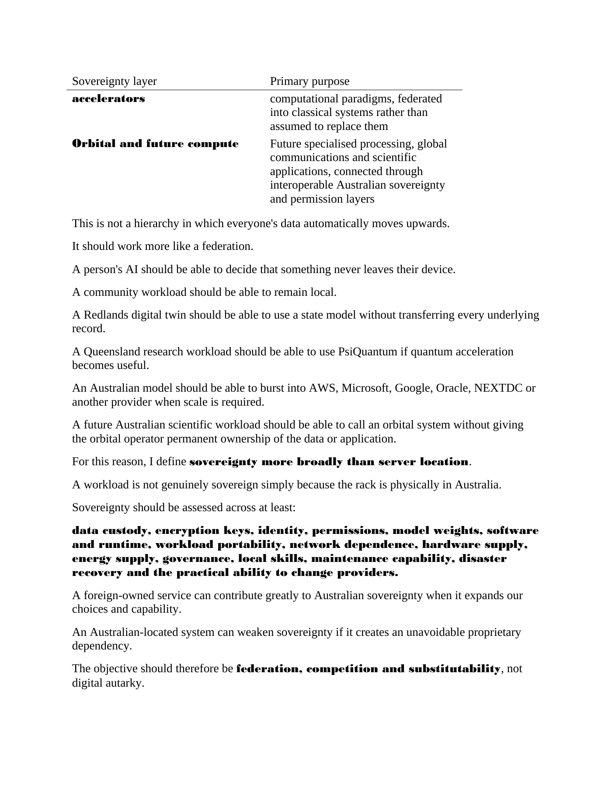
Read selectable text for page 9
Text extracted from this page. Use the page image for its original layout, tables and figures.
accelerators computational paradigms, federated
into classical systems rather than
assumed to replace them
Orbital and future compute Future specialised processing, global
communications and scientific
applications, connected through
interoperable Australian sovereignty
and permission layers
This is not a hierarchy in which everyone's data automatically moves upwards.
It should work more like a federation.
A person's AI should be able to decide that something never leaves their device.
A community workload should be able to remain local.
A Redlands digital twin should be able to use a state model without transferring every underlying
record.
A Queensland research workload should be able to use PsiQuantum if quantum acceleration
becomes useful.
An Australian model should be able to burst into AWS, Microsoft, Google, Oracle, NEXTDC or
another provider when scale is required.
A future Australian scientific workload should be able to call an orbital system without giving
the orbital operator permanent ownership of the data or application.
For this reason, I define sovereignty more broadly than server location.
A workload is not genuinely sovereign simply because the rack is physically in Australia.
Sovereignty should be assessed across at least:
data custody, encryption keys, identity, permissions, model weights, software
and runtime, workload portability, network dependence, hardware supply,
energy supply, governance, local skills, maintenance capability, disaster
recovery and the practical ability to change providers.
A foreign-owned service can contribute greatly to Australian sovereignty when it expands our
choices and capability.
An Australian-located system can weaken sovereignty if it creates an unavoidable proprietary
dependency.
The objective should therefore be federation, competition and substitutability, not
digital autarky.
Page 10 of 23
{kind=link}
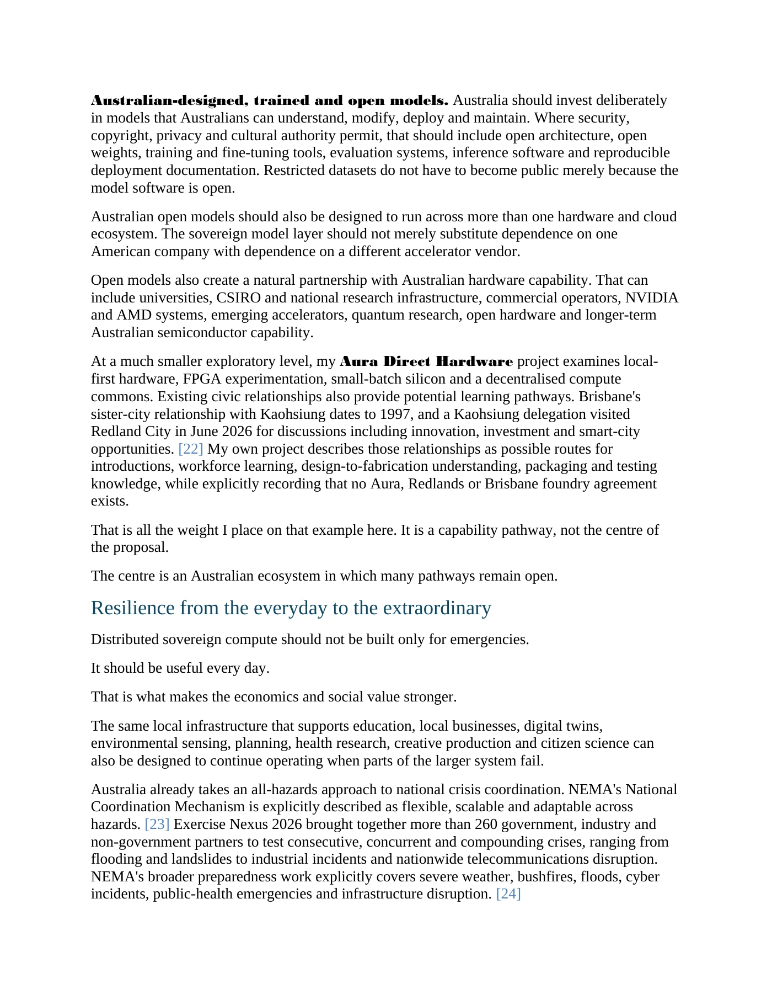
Read selectable text for page 10
Text extracted from this page. Use the page image for its original layout, tables and figures.
in models that Australians can understand, modify, deploy and maintain. Where security,
copyright, privacy and cultural authority permit, that should include open architecture, open
weights, training and fine-tuning tools, evaluation systems, inference software and reproducible
deployment documentation. Restricted datasets do not have to become public merely because the
model software is open.
Australian open models should also be designed to run across more than one hardware and cloud
ecosystem. The sovereign model layer should not merely substitute dependence on one
American company with dependence on a different accelerator vendor.
Open models also create a natural partnership with Australian hardware capability. That can
include universities, CSIRO and national research infrastructure, commercial operators, NVIDIA
and AMD systems, emerging accelerators, quantum research, open hardware and longer-term
Australian semiconductor capability.
At a much smaller exploratory level, my Aura Direct Hardware project examines local-
first hardware, FPGA experimentation, small-batch silicon and a decentralised compute
commons. Existing civic relationships also provide potential learning pathways. Brisbane's
sister-city relationship with Kaohsiung dates to 1997, and a Kaohsiung delegation visited
Redland City in June 2026 for discussions including innovation, investment and smart-city
opportunities. [22] My own project describes those relationships as possible routes for
introductions, workforce learning, design-to-fabrication understanding, packaging and testing
knowledge, while explicitly recording that no Aura, Redlands or Brisbane foundry agreement
exists.
That is all the weight I place on that example here. It is a capability pathway, not the centre of
the proposal.
The centre is an Australian ecosystem in which many pathways remain open.
Resilience from the everyday to the extraordinary
Distributed sovereign compute should not be built only for emergencies.
It should be useful every day.
That is what makes the economics and social value stronger.
The same local infrastructure that supports education, local businesses, digital twins,
environmental sensing, planning, health research, creative production and citizen science can
also be designed to continue operating when parts of the larger system fail.
Australia already takes an all-hazards approach to national crisis coordination. NEMA's National
Coordination Mechanism is explicitly described as flexible, scalable and adaptable across
hazards. [23] Exercise Nexus 2026 brought together more than 260 government, industry and
non-government partners to test consecutive, concurrent and compounding crises, ranging from
flooding and landslides to industrial incidents and nationwide telecommunications disruption.
NEMA's broader preparedness work explicitly covers severe weather, bushfires, floods, cyber
incidents, public-health emergencies and infrastructure disruption. [24]
Page 11 of 23
{kind=link}
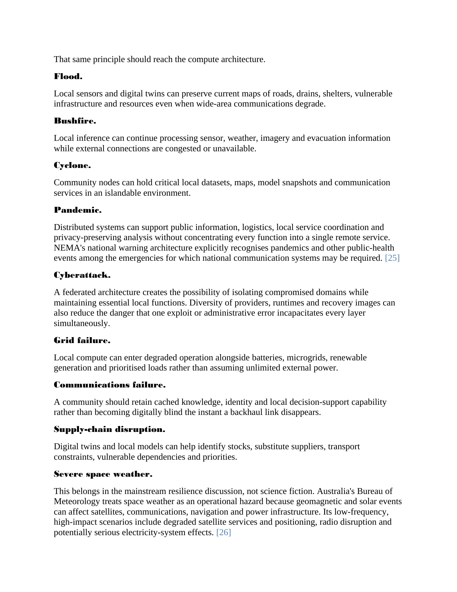
Read selectable text for page 11
Text extracted from this page. Use the page image for its original layout, tables and figures.
Flood.
Local sensors and digital twins can preserve current maps of roads, drains, shelters, vulnerable
infrastructure and resources even when wide-area communications degrade.
Bushfire.
Local inference can continue processing sensor, weather, imagery and evacuation information
while external connections are congested or unavailable.
Cyclone.
Community nodes can hold critical local datasets, maps, model snapshots and communication
services in an islandable environment.
Pandemic.
Distributed systems can support public information, logistics, local service coordination and
privacy-preserving analysis without concentrating every function into a single remote service.
NEMA's national warning architecture explicitly recognises pandemics and other public-health
events among the emergencies for which national communication systems may be required. [25]
Cyberattack.
A federated architecture creates the possibility of isolating compromised domains while
maintaining essential local functions. Diversity of providers, runtimes and recovery images can
also reduce the danger that one exploit or administrative error incapacitates every layer
simultaneously.
Grid failure.
Local compute can enter degraded operation alongside batteries, microgrids, renewable
generation and prioritised loads rather than assuming unlimited external power.
Communications failure.
A community should retain cached knowledge, identity and local decision-support capability
rather than becoming digitally blind the instant a backhaul link disappears.
Supply-chain disruption.
Digital twins and local models can help identify stocks, substitute suppliers, transport
constraints, vulnerable dependencies and priorities.
Severe space weather.
This belongs in the mainstream resilience discussion, not science fiction. Australia's Bureau of
Meteorology treats space weather as an operational hazard because geomagnetic and solar events
can affect satellites, communications, navigation and power infrastructure. Its low-frequency,
high-impact scenarios include degraded satellite services and positioning, radio disruption and
potentially serious electricity-system effects. [26]
Page 12 of 23
{kind=link}
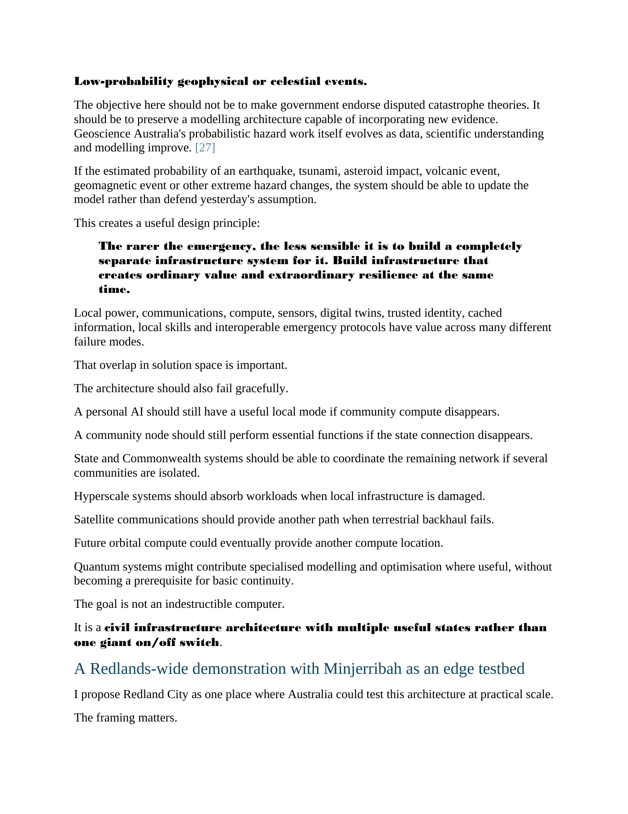
Read selectable text for page 12
Text extracted from this page. Use the page image for its original layout, tables and figures.
The objective here should not be to make government endorse disputed catastrophe theories. It
should be to preserve a modelling architecture capable of incorporating new evidence.
Geoscience Australia's probabilistic hazard work itself evolves as data, scientific understanding
and modelling improve. [27]
If the estimated probability of an earthquake, tsunami, asteroid impact, volcanic event,
geomagnetic event or other extreme hazard changes, the system should be able to update the
model rather than defend yesterday's assumption.
This creates a useful design principle:
The rarer the emergency, the less sensible it is to build a completely
separate infrastructure system for it. Build infrastructure that
creates ordinary value and extraordinary resilience at the same
time.
Local power, communications, compute, sensors, digital twins, trusted identity, cached
information, local skills and interoperable emergency protocols have value across many different
failure modes.
That overlap in solution space is important.
The architecture should also fail gracefully.
A personal AI should still have a useful local mode if community compute disappears.
A community node should still perform essential functions if the state connection disappears.
State and Commonwealth systems should be able to coordinate the remaining network if several
communities are isolated.
Hyperscale systems should absorb workloads when local infrastructure is damaged.
Satellite communications should provide another path when terrestrial backhaul fails.
Future orbital compute could eventually provide another compute location.
Quantum systems might contribute specialised modelling and optimisation where useful, without
becoming a prerequisite for basic continuity.
The goal is not an indestructible computer.
It is a civil infrastructure architecture with multiple useful states rather than
one giant on/off switch.
A Redlands-wide demonstration with Minjerribah as an edge testbed
I propose Redland City as one place where Australia could test this architecture at practical scale.
The framing matters.
Page 13 of 23
{kind=link}
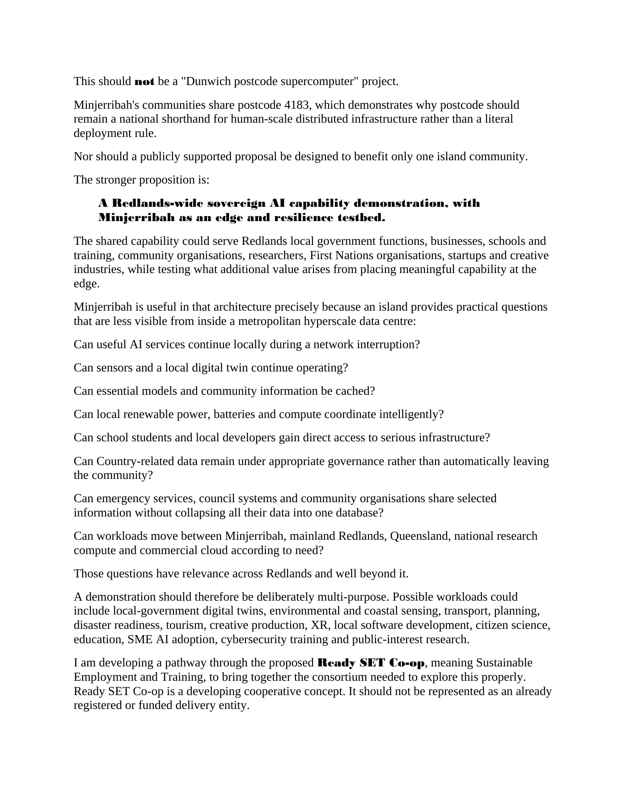
Read selectable text for page 13
Text extracted from this page. Use the page image for its original layout, tables and figures.
Minjerribah's communities share postcode 4183, which demonstrates why postcode should
remain a national shorthand for human-scale distributed infrastructure rather than a literal
deployment rule.
Nor should a publicly supported proposal be designed to benefit only one island community.
The stronger proposition is:
A Redlands-wide sovereign AI capability demonstration, with
Minjerribah as an edge and resilience testbed.
The shared capability could serve Redlands local government functions, businesses, schools and
training, community organisations, researchers, First Nations organisations, startups and creative
industries, while testing what additional value arises from placing meaningful capability at the
edge.
Minjerribah is useful in that architecture precisely because an island provides practical questions
that are less visible from inside a metropolitan hyperscale data centre:
Can useful AI services continue locally during a network interruption?
Can sensors and a local digital twin continue operating?
Can essential models and community information be cached?
Can local renewable power, batteries and compute coordinate intelligently?
Can school students and local developers gain direct access to serious infrastructure?
Can Country-related data remain under appropriate governance rather than automatically leaving
the community?
Can emergency services, council systems and community organisations share selected
information without collapsing all their data into one database?
Can workloads move between Minjerribah, mainland Redlands, Queensland, national research
compute and commercial cloud according to need?
Those questions have relevance across Redlands and well beyond it.
A demonstration should therefore be deliberately multi-purpose. Possible workloads could
include local-government digital twins, environmental and coastal sensing, transport, planning,
disaster readiness, tourism, creative production, XR, local software development, citizen science,
education, SME AI adoption, cybersecurity training and public-interest research.
I am developing a pathway through the proposed Ready SET Co-op, meaning Sustainable
Employment and Training, to bring together the consortium needed to explore this properly.
Ready SET Co-op is a developing cooperative concept. It should not be represented as an already
registered or funded delivery entity.
Page 14 of 23
{kind=link}
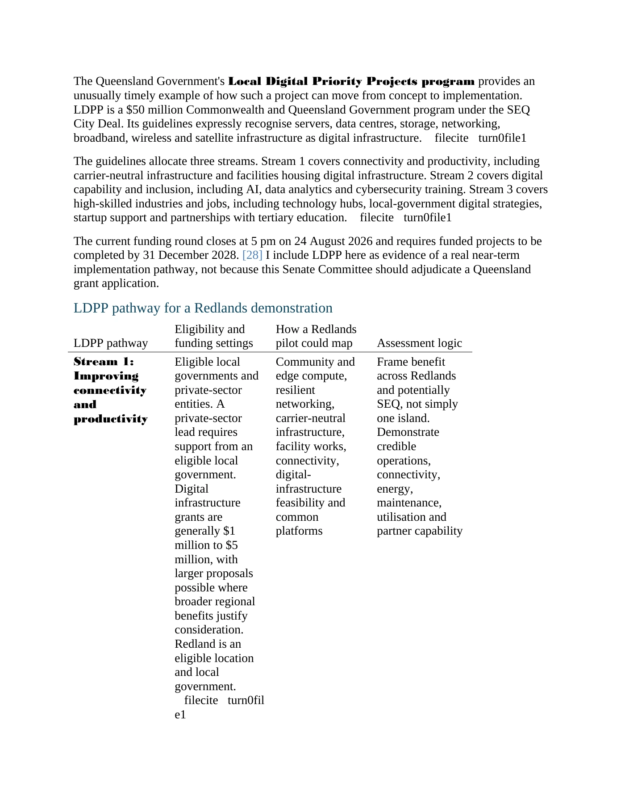
Read selectable text for page 14
Text extracted from this page. Use the page image for its original layout, tables and figures.
unusually timely example of how such a project can move from concept to implementation.
LDPP is a $50 million Commonwealth and Queensland Government program under the SEQ
City Deal. Its guidelines expressly recognise servers, data centres, storage, networking,
broadband, wireless and satellite infrastructure as digital infrastructure. fileciteturn0file1
The guidelines allocate three streams. Stream 1 covers connectivity and productivity, including
carrier-neutral infrastructure and facilities housing digital infrastructure. Stream 2 covers digital
capability and inclusion, including AI, data analytics and cybersecurity training. Stream 3 covers
high-skilled industries and jobs, including technology hubs, local-government digital strategies,
startup support and partnerships with tertiary education. fileciteturn0file1
The current funding round closes at 5 pm on 24 August 2026 and requires funded projects to be
completed by 31 December 2028. [28] I include LDPP here as evidence of a real near-term
implementation pathway, not because this Senate Committee should adjudicate a Queensland
grant application.
LDPP pathway for a Redlands demonstration
LDPP pathway
Eligibility and
funding settings
How a Redlands
pilot could map Assessment logic
Stream 1:
Improving
connectivity
and
productivity
Eligible local
governments and
private-sector
entities. A
private-sector
lead requires
support from an
eligible local
government.
Digital
infrastructure
grants are
generally $1
million to $5
million, with
larger proposals
possible where
broader regional
benefits justify
consideration.
Redland is an
eligible location
and local
government.
fileciteturn0fil
e1
Community and
edge compute,
resilient
networking,
carrier-neutral
infrastructure,
facility works,
connectivity,
digital-
infrastructure
feasibility and
common
platforms
Frame benefit
across Redlands
and potentially
SEQ, not simply
one island.
Demonstrate
credible
operations,
connectivity,
energy,
maintenance,
utilisation and
partner capability
Page 15 of 23
{kind=link}
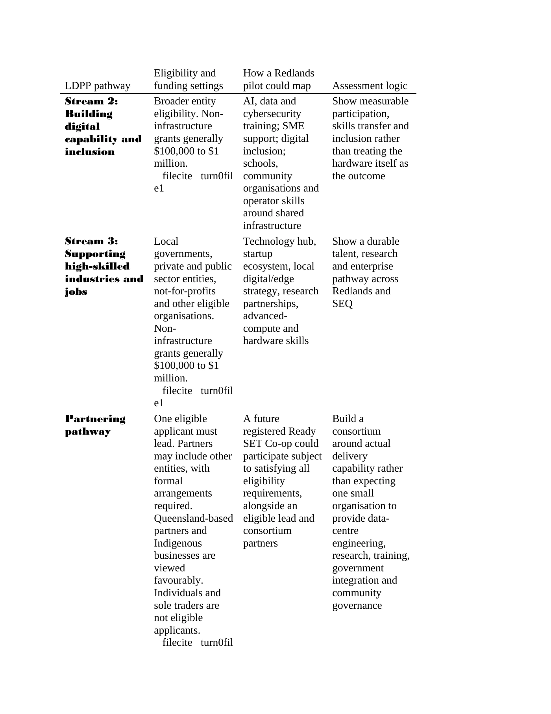
Read selectable text for page 15
Text extracted from this page. Use the page image for its original layout, tables and figures.
Eligibility and
funding settings
How a Redlands
pilot could map Assessment logic
Stream 2:
Building
digital
capability and
inclusion
Broader entity
eligibility. Non-
infrastructure
grants generally
$100,000 to $1
million.
fileciteturn0fil
e1
AI, data and
cybersecurity
training; SME
support; digital
inclusion;
schools,
community
organisations and
operator skills
around shared
infrastructure
Show measurable
participation,
skills transfer and
inclusion rather
than treating the
hardware itself as
the outcome
Stream 3:
Supporting
high-skilled
industries and
jobs
Local
governments,
private and public
sector entities,
not-for-profits
and other eligible
organisations.
Non-
infrastructure
grants generally
$100,000 to $1
million.
fileciteturn0fil
e1
Technology hub,
startup
ecosystem, local
digital/edge
strategy, research
partnerships,
advanced-
compute and
hardware skills
Show a durable
talent, research
and enterprise
pathway across
Redlands and
SEQ
Partnering
pathway
One eligible
applicant must
lead. Partners
may include other
entities, with
formal
arrangements
required.
Queensland-based
partners and
Indigenous
businesses are
viewed
favourably.
Individuals and
sole traders are
not eligible
applicants.
fileciteturn0fil
A future
registered Ready
SET Co-op could
participate subject
to satisfying all
eligibility
requirements,
alongside an
eligible lead and
consortium
partners
Build a
consortium
around actual
delivery
capability rather
than expecting
one small
organisation to
provide data-
centre
engineering,
research, training,
government
integration and
community
governance
Page 16 of 23
{kind=link}
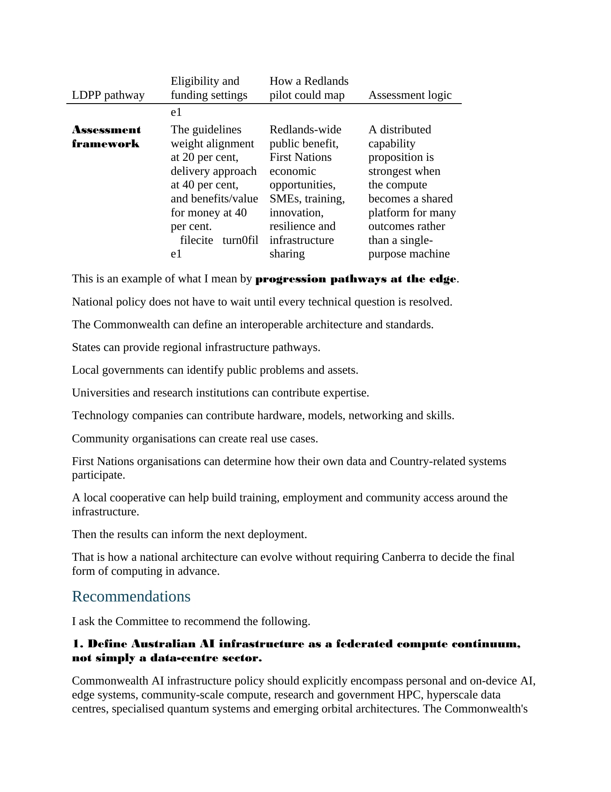
Read selectable text for page 16
Text extracted from this page. Use the page image for its original layout, tables and figures.
Eligibility and
funding settings
How a Redlands
pilot could map Assessment logic
e1
Assessment
framework
The guidelines
weight alignment
at 20 per cent,
delivery approach
at 40 per cent,
and benefits/value
for money at 40
per cent.
fileciteturn0fil
e1
Redlands-wide
public benefit,
First Nations
economic
opportunities,
SMEs, training,
innovation,
resilience and
infrastructure
sharing
A distributed
capability
proposition is
strongest when
the compute
becomes a shared
platform for many
outcomes rather
than a single-
purpose machine
This is an example of what I mean by progression pathways at the edge.
National policy does not have to wait until every technical question is resolved.
The Commonwealth can define an interoperable architecture and standards.
States can provide regional infrastructure pathways.
Local governments can identify public problems and assets.
Universities and research institutions can contribute expertise.
Technology companies can contribute hardware, models, networking and skills.
Community organisations can create real use cases.
First Nations organisations can determine how their own data and Country-related systems
participate.
A local cooperative can help build training, employment and community access around the
infrastructure.
Then the results can inform the next deployment.
That is how a national architecture can evolve without requiring Canberra to decide the final
form of computing in advance.
Recommendations
I ask the Committee to recommend the following.
1. Define Australian AI infrastructure as a federated compute continuum,
not simply a data-centre sector.
Commonwealth AI infrastructure policy should explicitly encompass personal and on-device AI,
edge systems, community-scale compute, research and government HPC, hyperscale data
centres, specialised quantum systems and emerging orbital architectures. The Commonwealth's
Page 17 of 23
{kind=link}
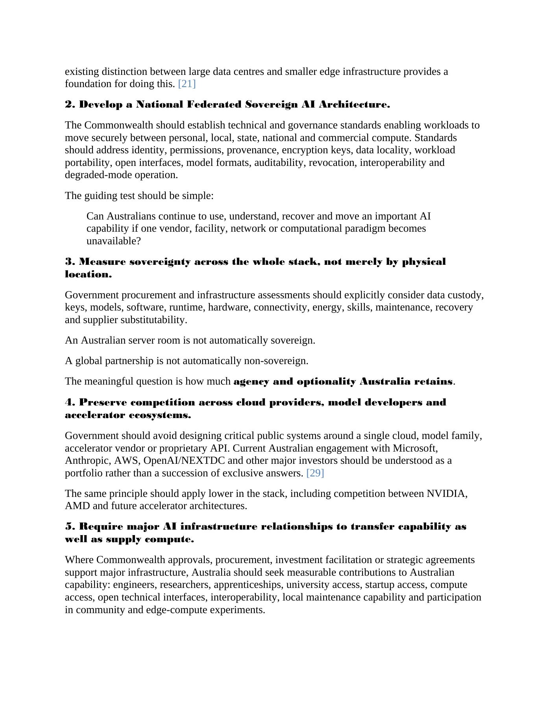
Read selectable text for page 17
Text extracted from this page. Use the page image for its original layout, tables and figures.
foundation for doing this. [21]
2. Develop a National Federated Sovereign AI Architecture.
The Commonwealth should establish technical and governance standards enabling workloads to
move securely between personal, local, state, national and commercial compute. Standards
should address identity, permissions, provenance, encryption keys, data locality, workload
portability, open interfaces, model formats, auditability, revocation, interoperability and
degraded-mode operation.
The guiding test should be simple:
Can Australians continue to use, understand, recover and move an important AI
capability if one vendor, facility, network or computational paradigm becomes
unavailable?
3. Measure sovereignty across the whole stack, not merely by physical
location.
Government procurement and infrastructure assessments should explicitly consider data custody,
keys, models, software, runtime, hardware, connectivity, energy, skills, maintenance, recovery
and supplier substitutability.
An Australian server room is not automatically sovereign.
A global partnership is not automatically non-sovereign.
The meaningful question is how much agency and optionality Australia retains.
4. Preserve competition across cloud providers, model developers and
accelerator ecosystems.
Government should avoid designing critical public systems around a single cloud, model family,
accelerator vendor or proprietary API. Current Australian engagement with Microsoft,
Anthropic, AWS, OpenAI/NEXTDC and other major investors should be understood as a
portfolio rather than a succession of exclusive answers. [29]
The same principle should apply lower in the stack, including competition between NVIDIA,
AMD and future accelerator architectures.
5. Require major AI infrastructure relationships to transfer capability as
well as supply compute.
Where Commonwealth approvals, procurement, investment facilitation or strategic agreements
support major infrastructure, Australia should seek measurable contributions to Australian
capability: engineers, researchers, apprenticeships, university access, startup access, compute
access, open technical interfaces, interoperability, local maintenance capability and participation
in community and edge-compute experiments.
Page 18 of 23
{kind=link}
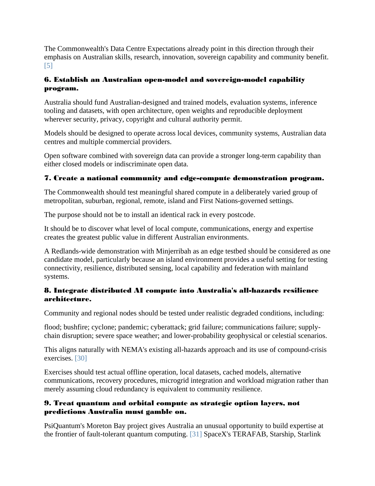
Read selectable text for page 18
Text extracted from this page. Use the page image for its original layout, tables and figures.
emphasis on Australian skills, research, innovation, sovereign capability and community benefit.
[5]
6. Establish an Australian open-model and sovereign-model capability
program.
Australia should fund Australian-designed and trained models, evaluation systems, inference
tooling and datasets, with open architecture, open weights and reproducible deployment
wherever security, privacy, copyright and cultural authority permit.
Models should be designed to operate across local devices, community systems, Australian data
centres and multiple commercial providers.
Open software combined with sovereign data can provide a stronger long-term capability than
either closed models or indiscriminate open data.
7. Create a national community and edge-compute demonstration program.
The Commonwealth should test meaningful shared compute in a deliberately varied group of
metropolitan, suburban, regional, remote, island and First Nations-governed settings.
The purpose should not be to install an identical rack in every postcode.
It should be to discover what level of local compute, communications, energy and expertise
creates the greatest public value in different Australian environments.
A Redlands-wide demonstration with Minjerribah as an edge testbed should be considered as one
candidate model, particularly because an island environment provides a useful setting for testing
connectivity, resilience, distributed sensing, local capability and federation with mainland
systems.
8. Integrate distributed AI compute into Australia's all-hazards resilience
architecture.
Community and regional nodes should be tested under realistic degraded conditions, including:
flood; bushfire; cyclone; pandemic; cyberattack; grid failure; communications failure; supply-
chain disruption; severe space weather; and lower-probability geophysical or celestial scenarios.
This aligns naturally with NEMA's existing all-hazards approach and its use of compound-crisis
exercises. [30]
Exercises should test actual offline operation, local datasets, cached models, alternative
communications, recovery procedures, microgrid integration and workload migration rather than
merely assuming cloud redundancy is equivalent to community resilience.
9. Treat quantum and orbital compute as strategic option layers, not
predictions Australia must gamble on.
PsiQuantum's Moreton Bay project gives Australia an unusual opportunity to build expertise at
the frontier of fault-tolerant quantum computing. [31] SpaceX's TERAFAB, Starship, Starlink
Page 19 of 23
{kind=link}
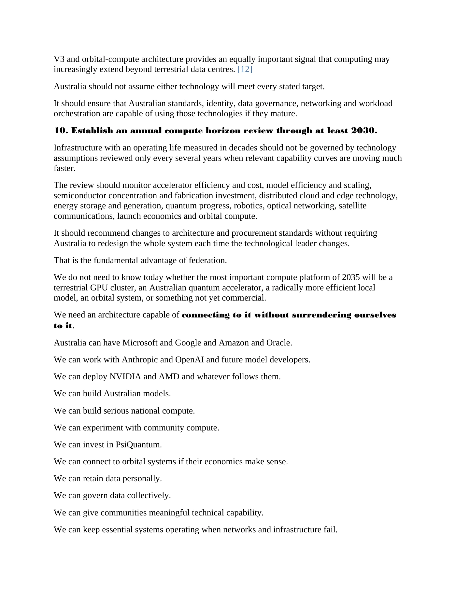
Read selectable text for page 19
Text extracted from this page. Use the page image for its original layout, tables and figures.
increasingly extend beyond terrestrial data centres. [12]
Australia should not assume either technology will meet every stated target.
It should ensure that Australian standards, identity, data governance, networking and workload
orchestration are capable of using those technologies if they mature.
10. Establish an annual compute horizon review through at least 2030.
Infrastructure with an operating life measured in decades should not be governed by technology
assumptions reviewed only every several years when relevant capability curves are moving much
faster.
The review should monitor accelerator efficiency and cost, model efficiency and scaling,
semiconductor concentration and fabrication investment, distributed cloud and edge technology,
energy storage and generation, quantum progress, robotics, optical networking, satellite
communications, launch economics and orbital compute.
It should recommend changes to architecture and procurement standards without requiring
Australia to redesign the whole system each time the technological leader changes.
That is the fundamental advantage of federation.
We do not need to know today whether the most important compute platform of 2035 will be a
terrestrial GPU cluster, an Australian quantum accelerator, a radically more efficient local
model, an orbital system, or something not yet commercial.
We need an architecture capable of connecting to it without surrendering ourselves
to it.
Australia can have Microsoft and Google and Amazon and Oracle.
We can work with Anthropic and OpenAI and future model developers.
We can deploy NVIDIA and AMD and whatever follows them.
We can build Australian models.
We can build serious national compute.
We can experiment with community compute.
We can invest in PsiQuantum.
We can connect to orbital systems if their economics make sense.
We can retain data personally.
We can govern data collectively.
We can give communities meaningful technical capability.
We can keep essential systems operating when networks and infrastructure fail.
Page 20 of 23
{kind=link}
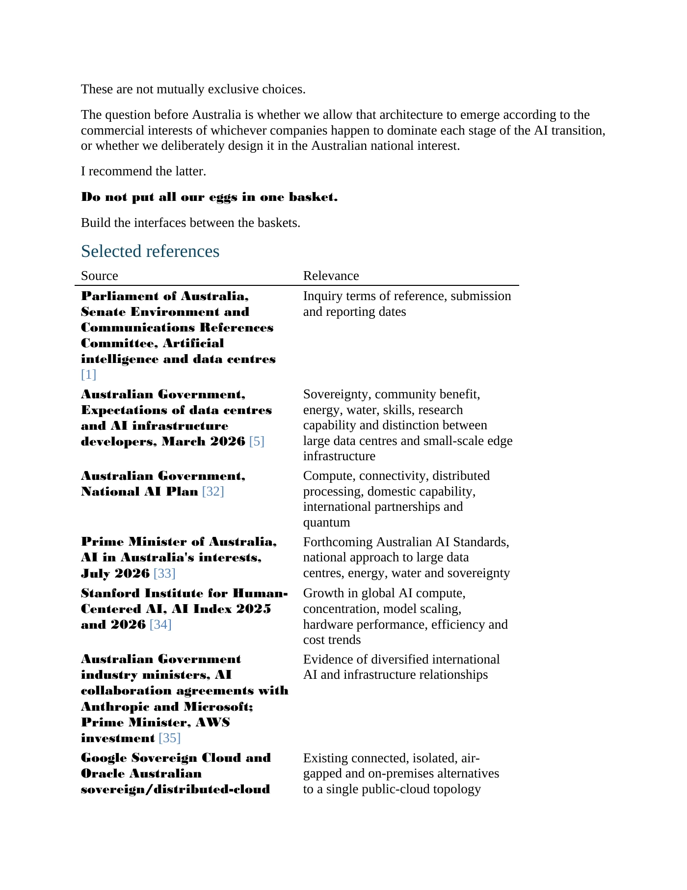
Read selectable text for page 20
Text extracted from this page. Use the page image for its original layout, tables and figures.
The question before Australia is whether we allow that architecture to emerge according to the
commercial interests of whichever companies happen to dominate each stage of the AI transition,
or whether we deliberately design it in the Australian national interest.
I recommend the latter.
Do not put all our eggs in one basket.
Build the interfaces between the baskets.
Selected references
Source Relevance
Parliament of Australia,
Senate Environment and
Communications References
Committee, Artificial
intelligence and data centres
[1]
Inquiry terms of reference, submission
and reporting dates
Australian Government,
Expectations of data centres
and AI infrastructure
developers, March 2026 [5]
Sovereignty, community benefit,
energy, water, skills, research
capability and distinction between
large data centres and small-scale edge
infrastructure
Australian Government,
National AI Plan [32]
Compute, connectivity, distributed
processing, domestic capability,
international partnerships and
quantum
Prime Minister of Australia,
AI in Australia's interests,
July 2026 [33]
Forthcoming Australian AI Standards,
national approach to large data
centres, energy, water and sovereignty
Stanford Institute for Human-
Centered AI, AI Index 2025
and 2026 [34]
Growth in global AI compute,
concentration, model scaling,
hardware performance, efficiency and
cost trends
Australian Government
industry ministers, AI
collaboration agreements with
Anthropic and Microsoft;
Prime Minister, AWS
investment [35]
Evidence of diversified international
AI and infrastructure relationships
Google Sovereign Cloud and
Oracle Australian
sovereign/distributed-cloud
Existing connected, isolated, air-
gapped and on-premises alternatives
to a single public-cloud topology
Page 21 of 23
{kind=link}
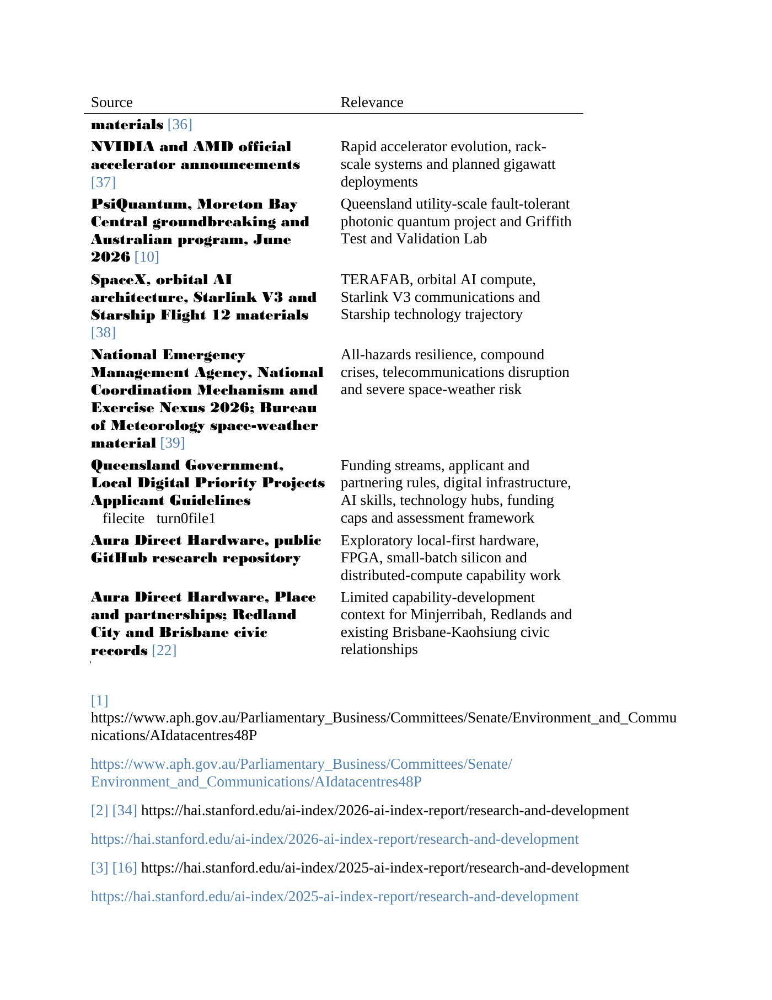
Read selectable text for page 21
Text extracted from this page. Use the page image for its original layout, tables and figures.
materials [36]
NVIDIA and AMD official
accelerator announcements
[37]
Rapid accelerator evolution, rack-
scale systems and planned gigawatt
deployments
PsiQuantum, Moreton Bay
Central groundbreaking and
Australian program, June
2026 [10]
Queensland utility-scale fault-tolerant
photonic quantum project and Griffith
Test and Validation Lab
SpaceX, orbital AI
architecture, Starlink V3 and
Starship Flight 12 materials
[38]
TERAFAB, orbital AI compute,
Starlink V3 communications and
Starship technology trajectory
National Emergency
Management Agency, National
Coordination Mechanism and
Exercise Nexus 2026; Bureau
of Meteorology space-weather
material [39]
All-hazards resilience, compound
crises, telecommunications disruption
and severe space-weather risk
Queensland Government,
Local Digital Priority Projects
Applicant Guidelines
fileciteturn0file1
Funding streams, applicant and
partnering rules, digital infrastructure,
AI skills, technology hubs, funding
caps and assessment framework
Aura Direct Hardware, public
GitHub research repository
Exploratory local-first hardware,
FPGA, small-batch silicon and
distributed-compute capability work
Aura Direct Hardware, Place
and partnerships; Redland
City and Brisbane civic
records [22]
Limited capability-development
context for Minjerribah, Redlands and
existing Brisbane-Kaohsiung civic
relationships
[1]
https://www.aph.gov.au/Parliamentary_Business/Committees/Senate/Environment_and_Commu
nications/AIdatacentres48P
https://www.aph.gov.au/Parliamentary_Business/Committees/Senate/
Environment_and_Communications/AIdatacentres48P
[2] [34] https://hai.stanford.edu/ai-index/2026-ai-index-report/research-and-development
https://hai.stanford.edu/ai-index/2026-ai-index-report/research-and-development
[3] [16] https://hai.stanford.edu/ai-index/2025-ai-index-report/research-and-development
https://hai.stanford.edu/ai-index/2025-ai-index-report/research-and-development
Page 22 of 23
{kind=link}
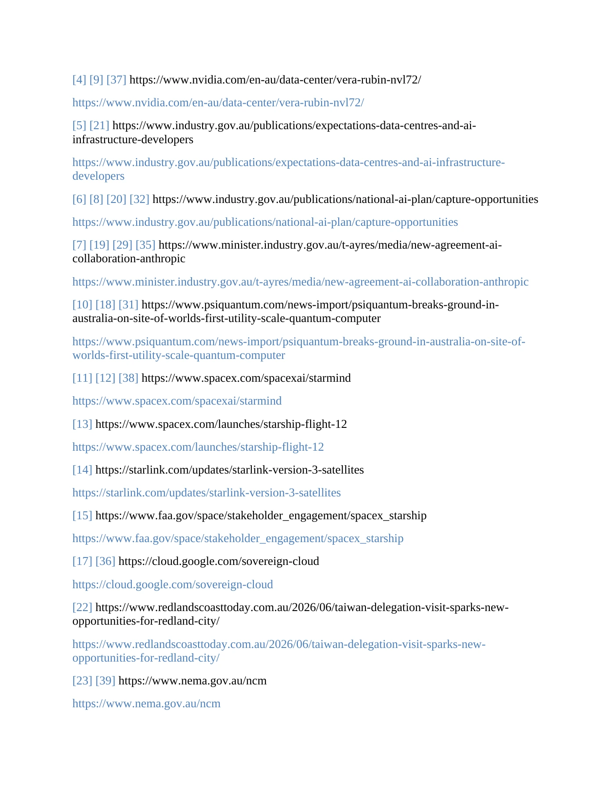
Read selectable text for page 22
Text extracted from this page. Use the page image for its original layout, tables and figures.
https://www.nvidia.com/en-au/data-center/vera-rubin-nvl72/
[5] [21] https://www.industry.gov.au/publications/expectations-data-centres-and-ai-
infrastructure-developers
https://www.industry.gov.au/publications/expectations-data-centres-and-ai-infrastructure-
developers
[6] [8] [20] [32] https://www.industry.gov.au/publications/national-ai-plan/capture-opportunities
https://www.industry.gov.au/publications/national-ai-plan/capture-opportunities
[7] [19] [29] [35] https://www.minister.industry.gov.au/t-ayres/media/new-agreement-ai-
collaboration-anthropic
https://www.minister.industry.gov.au/t-ayres/media/new-agreement-ai-collaboration-anthropic
[10] [18] [31] https://www.psiquantum.com/news-import/psiquantum-breaks-ground-in-
australia-on-site-of-worlds-first-utility-scale-quantum-computer
https://www.psiquantum.com/news-import/psiquantum-breaks-ground-in-australia-on-site-of-
worlds-first-utility-scale-quantum-computer
[11] [12] [38] https://www.spacex.com/spacexai/starmind
https://www.spacex.com/spacexai/starmind
[13] https://www.spacex.com/launches/starship-flight-12
https://www.spacex.com/launches/starship-flight-12
[14] https://starlink.com/updates/starlink-version-3-satellites
https://starlink.com/updates/starlink-version-3-satellites
[15] https://www.faa.gov/space/stakeholder_engagement/spacex_starship
https://www.faa.gov/space/stakeholder_engagement/spacex_starship
[17] [36] https://cloud.google.com/sovereign-cloud
https://cloud.google.com/sovereign-cloud
[22] https://www.redlandscoasttoday.com.au/2026/06/taiwan-delegation-visit-sparks-new-
opportunities-for-redland-city/
https://www.redlandscoasttoday.com.au/2026/06/taiwan-delegation-visit-sparks-new-
opportunities-for-redland-city/
[23] [39] https://www.nema.gov.au/ncm
https://www.nema.gov.au/ncm
Page 23 of 23
{kind=link}
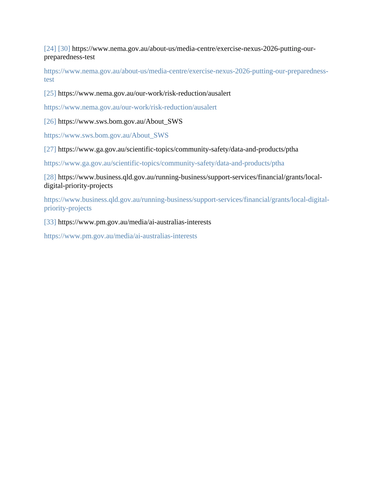
Read selectable text for page 23
Text extracted from this page. Use the page image for its original layout, tables and figures.
preparedness-test
https://www.nema.gov.au/about-us/media-centre/exercise-nexus-2026-putting-our-preparedness-
test
[25] https://www.nema.gov.au/our-work/risk-reduction/ausalert
https://www.nema.gov.au/our-work/risk-reduction/ausalert
[26] https://www.sws.bom.gov.au/About_SWS
https://www.sws.bom.gov.au/About_SWS
[27] https://www.ga.gov.au/scientific-topics/community-safety/data-and-products/ptha
https://www.ga.gov.au/scientific-topics/community-safety/data-and-products/ptha
[28] https://www.business.qld.gov.au/running-business/support-services/financial/grants/local-
digital-priority-projects
https://www.business.qld.gov.au/running-business/support-services/financial/grants/local-digital-
priority-projects
[33] https://www.pm.gov.au/media/ai-australias-interests
https://www.pm.gov.au/media/ai-australias-interests